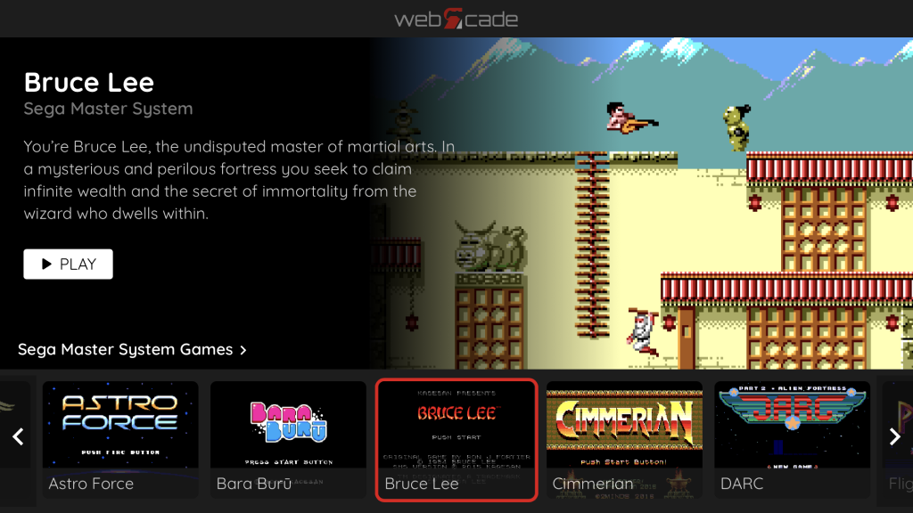

About
WebЯcade consists of an intuitive web-based front end that enables playing popular gaming content entirely within the context of the browser across a wide variety of platforms (Xbox Series X|S, iOS, Android, Windows, macOS). Gamepads are supported (Bluetooth and USB) for both front-end navigation and while playing games.
The content for playing games (binaries, etc.) and populating the front-end (images, etc.) is collected from cloud-based resources based on user-defined feeds. Each feed item (game, etc.) has an associated application type. Application types include emulators (Atari, Sega, Nintendo) and game engines (Classic Doom).

The following lists further describe webЯcade in terms of its focus.
Primary focus:
- Runs entirely within the web browser leveraging JavaScript, WebAssembly, and the HTML5 gamepad and audio interfaces
- Adaptive user interface that supports a wide variety of platforms (Xbox Series X|S, iOS, Android, Windows, macOS)
- Native gamepad support (Bluetooth and USB) for both front-end navigation and while playing games
- User-defined cloud-based feeds identify the resources (images, etc.) required to populate the front-end as well as the content (binaries, etc.) required to play games
- Each feed item (game, etc.) has an associated application type. Application types include emulators (Atari, Sega, Nintendo) and game engines (Classic Doom). The quantity and types of applications will continue to expand over time.
Not focused on:
- Directly playing locally stored game content (ROMs, etc.)
(Technically possible by using a local web server, but not a primary use case) - The "latest and greatest" emulator features and compatibility
(Primary emphasis is on compatibility with popular game content across a variety of platforms while minimizing resource requirements) - Touch-based (virtual) gamepad controls
(The focus is on native gamepad support via Bluetooth and USB)
Getting Started
The following steps are recommended for getting started with webЯcade:
- Review the User Guide in order to familiarize yourself with the webЯcade front-end.
- Read the documentation for the Platform (OS, device) you will be using with webЯcade to learn platform-specific details such as how to optimize the experience and how to connect gamepads.
- Review the documentation for each Application that is launched to determine its keyboard and gamepad mappings as well as any other application-specific notes (an application is the emulator or engine being used to play a particular game, etc.).